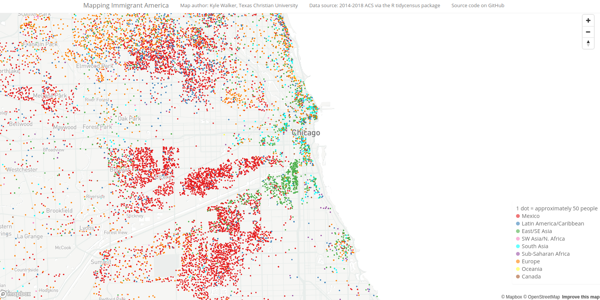

Creating and uploading Mapbox vector tilesets
creating-tiles.Rmdmapboxapi includes a series of tools to help R users generate vector tiles from their data to be used in Mapbox Studio visualization projects. The function upload_tiles() allows you to upload an sf object or a spatial file on disk to your Mapbox account using the Mapbox Uploads API. This will convert your spatial data into vector tiles that can be added to a style in Mapbox Studio.
Visualization of massive datasets, however, may require specialized tools. Mapbox recommends the tippecanoe tile-generation utility for these tasks. tippecanoe generates a scale-sensitive .mbtiles file that adds or removes complexity in a large dataset at different zoom levels.
mapboxapi allows R users to call tippecanoe from R with the tippecanoe() function. This requires that tippecanoe is installed on your system; see the tippecanoe documentation for installation instructions. Once installed, tippecanoe can be used in large visualization workflows in concert with Mapbox Studio, such as the example below with Microsoft building footprints data for Texas.
library(mapboxapi) library(mapdeck) library(httr) # Get the Microsoft buildings data for Texas and unzip GET("https://usbuildingdata.blob.core.windows.net/usbuildings-v1-1/Texas.zip", write_disk("Texas.zip", overwrite = TRUE), progress()) unzip("Texas.zip") # Use tippecanoe to make a dynamic .mbtiles file that visualizes large data appropriately # at any zoom level. sf objects can also be used as input! # (requires installing tippecanoe on your machine separately first) tippecanoe(input = "Texas.geojson", output = "Texas.mbtiles", layer_name = "texas_buildings") # Upload the generated tileset to your Mapbox account (requires a Mapbox secret access token # to be set as an environment variable) upload_tiles(input = "Texas.mbtiles", username = "kwalkertcu", tileset_id = "TX_buildings", multipart = TRUE) # Head over to Mapbox Studio when the upload is done (check the status with # `check_upload_status()`) and add it to a style. When you've styled it, bring it back # into R with mapdeck by referencing the style ID: mapdeck(token = Sys.getenv("MAPBOX_PUBLIC_TOKEN"), style = "mapbox://styles/kwalkertcu/ckaf9qxim1pyk1io7r2e8exj2/draft", zoom = 6, location = c(-98.7382803, 31.7678448))

These tools can also be used as part of larger research and visualization workflows, such as my Mapping Immigrant America project.
